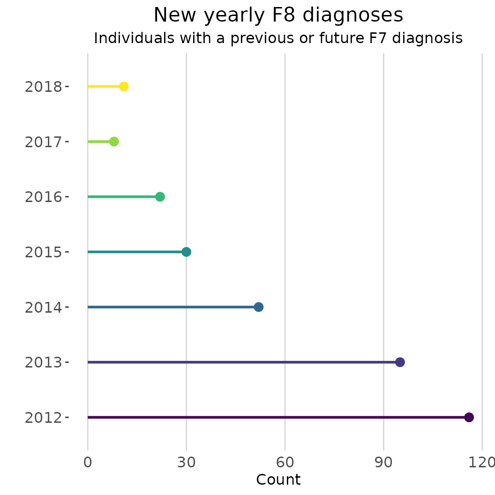

This vignette describes the aim and potential use cases of the
function synthetic_data(). In certain cases described in
this vignette, the synthetic_data() also requires an
internet connection.
Why?
In most research fields, individual-level data is regulated by strict confidentiality agreements. In Norway, sensitive health and administrative individual-level data cannot be shared or used outside of secure platforms, such as TSD (Services for sensitive data). While this type of disclosure control protects the privacy of study participants, it can also pose a significant challenge to reproducibility and transparency practices in research. Although code sharing has gained popularity, code cannot be appropriately evaluated (and potentially reused) if the original analytic data is unavailable.
One possible solution to the challenges associated with using
confidential data is to create synthetic or simulated data that have
similar structure and statistical characteristics as the original data.
There are a number of excellent R packages dedicated to creating
synthetic datasets from existing data, such as synthpop,
faux and simpop. The resulting synthetic data
are high-fidelity and aim to maintain the internal statistical
characteristics and relationships between variables. However, many
features of these packages rely on having full access to the original
individual-based data. Additionally, it is crucial to remember that
synthetic data based on existing datasets is not inherently private
(source , Alan Turing Institute) and can be vulnerable to data leaks and
attacks.
In line with the overarching objectives of regtools, the
synthetic_data() function aims to help researchers navigate
some of the challenges associated with working with confidential
individual-level data in Norway by creating synthetic datasets without
the need of pre-existing data. As this function does not require the use
of pre-existing data, it also does not attempt to capture the internal
statistical characteristics and relationships between variables.
However, synthetic_data() is still particularly useful for
researchers working with Norwegian health and sociodemographic datasets,
as it produces synthetic datasets with a structure and semantics
resembling those found in actual individual-level data (e.g NPR, KPR,
SSB).
Consider the features the synthetic_data() function, we
have identified three main use cases:
Easier code sharing: this type of synthetic datasets allow researchers to simultaneously share their analytically code and data without privacy concerns. In turn, reviewers and collaborators can successfully execute the code, facilitating its correct evaluation and potential reuse.
Educational purposes: the data generated by the
synthetic_data()function also provides a low-barrier and low-risk way of exploring and manipulating data, making it ideal for training or onboarding new researchers.Development without data access: if data availability is delayed or not possible to access for other reasons (e.g. preregistration), researchers can still prepare analytic scripts in advance.
How?
Broadly speaking, the synthetic_data() function has the
ability to create three different types of datasets that meet certain
minimum characteristics:
Diagnostic (health) data: This includes at least a unique personal identifier (ID), date of diagnostic event, and diagnosis code (such as ICD-10 or ICP-2). For instance, datasets from NPR (Norwegian Patient Registry) or KPR (Kommunalt pasient- og brukerregister).
Time-invariant data: Including at least a unique personal identifier (ID) and sociodemographic variables such as date of birth, immigration background, etc.
Time-varying data: Encompassing at least a unique personal identifier (ID), date, and sociodemographic variables such as place of residence or marital status. This type of information usually is updated quarterly or yearly in administrative registries.
Considering the complexity and variability of registry data, the
datasets created by synthetic_data() will likely differ to
a certain degree from the actual data delivered by NPR or SSB
(Statistics Norway). Even when the structure of the synthetic datasets
varies from the original data, the simulated datasets serve as a useful
starting point that researchers can further modify and tailor to suit
their specific needs. Furthermore, the synthetic_data()
function also keeps track of important metadata associated with the data
generation process. In this way, it is possible for researchers to
produce consistent datasets in an efficient manner.
Practical example
To successfully generate the three different synthetic datasets
describe in the section above, you will need to provide some information
about the population size and classifications you want to include in the
different datasets. For the whole description of each argument please
consult the synthetic_data() function’s documentation.
The population_size parameter will be used to ensure
that the size of the datasets is similar to the one you will encounter
working with real data, while also generating the necessary number of
diagnostic cases for the given prevalence or incidence rate. In the code
below, the population size is specified as 25,000 with a period
prevalence of .06 (6%). Therefore, there will be 1500 relevant cases in
the data.
With the purpose of making the synthetic datasets as realistic as possible, they all include an additional number of non-relevant cases (to complete the specified population size). Additionally, all the individuals in the diagnostic dataset can have a random number of repeated diagnostic events either in the same year or different years.
The arguments family_codes, pattern,
diag_years, sex_vector, y_birth,
invariant_codes, varying_query are all used to
populate the diagnostic, time-invariant and time-varying information of
the relevant 1500 cases. The remainder arguments are used to generate
the filler non-relevant cases.
In most cases you will want to specify your own column names and
codes for the invariant and time-varying variables
(invariant_codes, invariant_codes_filler,
varying_codes, varying_codes_filler), however
the function also supports looking for classification codes in SSB’s
Statistical Classifications and Codelists (Klass). Both
varying_query and invariant_queries options
require an internet connection to retrieve the specified classifications
and codelists from SSB.
dummy_data <- regtools::synthetic_data(
population_size = 25000,
prefix_ids = "P000",
length_ids = 6,
family_codes = c("F8"),
pattern = "increase",
prevalence = .060,
diag_years = c(2012:2020),
sex_vector = c(0, 1),
y_birth = c(2010:2018),
filler_codes = c("F4", "F7"),
filler_y_birth = c(2000:2009),
invariant_codes = list("innvandringsgrunn" = c("ARB", "NRD", "UKJ")),
invariant_codes_filler = list("innvandringsgrunn" = c("FAMM", "UTD")),
varying_query = "fylke",
seed = 123)
#> ℹ Creating relevant cases with the following characteristics:
#> • Population size = 25000
#> • Prefix IDs = P000
#> • Length IDs = 6
#> • Diagnostic relevant codes = F8
#> • Pattern of incidence = increase
#> • Prevalence = 0.06
#> • Diagnostic years = 2012, 2013, 2014, 2015, 2016, 2017, 2018, 2019, and 2020
#> • Incidence =
#> • Coding sex = 0 and 1
#> • Relevant years of birth = 2010, 2011, 2012, 2013, 2014, 2015, 2016, 2017, and
#> 2018
#> ℹ Creating filler cases with the following characteristics:
#> • Filler diagnostic codes = F4 and F7
#> • Filler years of birth = 2000, 2001, 2002, 2003, 2004, 2005, 2006, 2007, 2008,
#> and 2009
#> • Pattern for filler incidence = 'random'
#> • Number of filler cases to generate = 23500
#> ! This process can take some minutes...
#> ✔ Succesfully generated diagnostic, time-varying and time-invariant datasets!With the purpose of facilitating transparency and reproducibility,
the synthetic_data() function outputs a list with two named
lists: “datasets” and “metadata”. Within the first list (“datasets”),
you will find the diagnostic, time-invariant and time-varying data as
separate data frames.
str(dummy_data$datasets)
#> List of 3
#> $ invar_df: tibble [25,000 × 4] (S3: tbl_df/tbl/data.frame)
#> ..$ id : chr [1:25000] "P000000037" "P000000052" "P000000059" "P000000111" ...
#> ..$ sex : Factor w/ 2 levels "0","1": 2 2 2 1 2 1 1 2 1 2 ...
#> ..$ y_birth : int [1:25000] 2002 2001 2011 2009 2007 2006 2009 2004 2007 2001 ...
#> ..$ innvandringsgrunn: chr [1:25000] "FAMM" "FAMM" "NRD" "FAMM" ...
#> $ var_df : tibble [225,000 × 3] (S3: tbl_df/tbl/data.frame)
#> ..$ id : chr [1:225000] "P000000037" "P000000037" "P000000037" "P000000037" ...
#> ..$ year_varying: int [1:225000] 2012 2013 2014 2015 2016 2017 2018 2019 2020 2012 ...
#> ..$ varying_code: chr [1:225000] "03" "03" "03" "03" ...
#> $ diag_df : tibble [99,731 × 3] (S3: tbl_df/tbl/data.frame)
#> ..$ id : chr [1:99731] "P000000059" "P000000059" "P000000059" "P000001221" ...
#> ..$ code : chr [1:99731] "F801" "F419" "F480" "F848" ...
#> ..$ diag_year: int [1:99731] 2015 2017 2018 2020 2019 2017 2014 2019 2020 2020 ...
dummy_diag_df <- dummy_data$datasets$diag_df The second list (“metadata”) includes useful metadata like the exact call used to generate the datasets, as well as the values of each argument used in the function call.
str(dummy_data$metadata)
#> List of 2
#> $ call : language regtools::synthetic_data(population_size = 25000, prefix_ids = "P000", length_ids = 6, seed = 123, family_co| __truncated__ ...
#> $ arguments:List of 15
#> ..$ population_size : num 25000
#> ..$ prefix_ids : chr "P000"
#> ..$ length_ids : num 6
#> ..$ seed : num 123
#> ..$ family_codes : language c("F8")
#> ..$ pattern : chr "increase"
#> ..$ prevalence : num 0.06
#> ..$ diag_years : language c(2012:2020)
#> ..$ sex_vector : language c(0, 1)
#> ..$ y_birth : language c(2010:2018)
#> ..$ filler_codes : language c("F4", "F7")
#> ..$ filler_y_birth : language c(2000:2009)
#> ..$ invariant_codes : language list(innvandringsgrunn = c("ARB", "NRD", "UKJ"))
#> ..$ invariant_codes_filler: language list(innvandringsgrunn = c("FAMM", "UTD"))
#> ..$ varying_query : chr "fylke"Let’s say you are researcher looking into the co-occurrence of two
particular family codes (ICD-10 F8 and F7) in your population of
interest. However, there has been a delay in data access. However, using
the diagnostic dataset generated in the previous step and some of the
functions from regtools, it is possible to prepare some
analytic scripts before you have access to the actual data in your
project.
# Output in console has been silenced for this example
dates <- as.character(c(2012:2018))
diag_df_first <- dummy_diag_df |>
regtools::curate_diag_data(
code_col = "code",
date_col = "diag_year",
log_path = l_file)
diag_f8_year <- dates |>
purrr::map(\(x) regtools::filter_diag_data(
diag_df_first,
pattern_codes = "F8",
code_col = "code",
date_col = "y_diagnosis_first",
diag_dates = x,
log_path = l_file)) |>
purrr::map(\(x) dplyr::select(x, "id"))
diag_f7 <- dummy_diag_df |>
regtools::filter_diag_data(
pattern_codes = "F7",
code_col = "code",
log_path = l_file)
intersect_f8_f7 <- purrr::map(diag_f8_year, \(x) dplyr::intersect(x, diag_f7[1])) |>
purrr::map(\(x) nrow(x))
names(intersect_f8_f7) <- dates
intersect_f8_f7_df <- purrr::map_df(intersect_f8_f7, ~as.data.frame(.x), .id="year") |>
dplyr::rename("count" = ".x")
regtools::plot_rates(
intersect_f8_f7_df,
date_col = "year",
grouping_var = "year",
rate_col = "count",
plot_type = "lollipop",
percent = FALSE,
palette = "viridis",
plot_title = "New yearly F8 diagnoses",
y_name = "Count",
coord_flip = TRUE) +
ggplot2::labs(subtitle = "Individuals with a previous or future F7 diagnosis") +
ggplot2::theme(legend.position = "none")